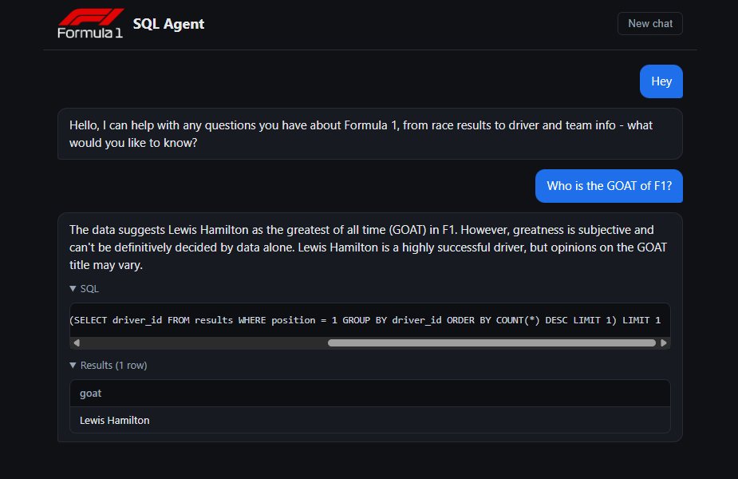

Case study · AI Engineering & Data
Conversational SQL Agent — Formula 1
Ask questions about F1 in plain English and get back the generated SQL, the result table, and a natural-language answer — backed by a self-updating pipeline covering every race since 2010.

◆ What it does
A natural-language interface to a Formula 1 database. Users ask questions like "Who won the 2021 championship?" or "Which team had the fastest average pit stop in 2023?" and the app generates the SQL, runs it against a live database, and returns a conversational answer — with the query and result table shown for transparency.
It handles follow-ups ("what about 2022?"), answers subjective questions honestly ("greatness is subjective, but by wins…"), and responds to greetings without fabricating data. It's a full-stack, end-to-end analytics system built with production concerns first: idempotent and resumable data loading, defense-in-depth against LLM-generated SQL, a streaming chat UX, a 53-test suite, CI, and a live deployment.
◆ Data engineering
A Python ETL pipeline pulls from the rate-limited Jolpica F1 API into a 12-table normalized Postgres schema (Supabase). It uses a sliding-window rate limiter, two-track retry/backoff, pure-function transforms, and idempotent FK-ordered upserts. A checkpointed backfill loads all seasons resumably — roughly 390K lap-timing rows plus full results, qualifying, and standings history — and a weekly GitHub Actions cron keeps it current, gated by a post-load data-quality check.
◆ The AI agent
A LangGraph state machine turns each message into a safe, executed query:
Route
Classifies the message (chit-chat vs. data question) and resolves conversational follow-ups from thread memory.
Generate
Injects the live database schema and generates SQL with an LLM (Groq / Llama 3.3 70B).
Validate
AST-based checks confirm the query is read-only and schema-correct before it touches the database.
Execute & self-correct
Runs the query; on error, real database messages are fed back to the model to self-correct — up to 3 attempts.
Answer
Formats the result into a plain-English answer, streamed alongside the SQL and result table.
◆ Security — the standout
Because the app executes LLM-generated SQL, it's defended in depth across three independent layers — and the guarantees are proven, not assumed:
- Dedicated read-only database role — writes are impossible at the database level, not just discouraged in prompts.
- AST-based query validation — SELECT-only, schema-checked, with an injected
LIMIT, parsed via sqlglot. - 8-second statement timeout — a runaway query can't hang the service.
- Adversarial safety tests — hostile prompts ("delete all drivers") are driven through the real agent, asserting row counts never change.
◆ Interface & delivery
A FastAPI backend streams progress over Server-Sent Events; a React + TypeScript (Vite) chat UI shows live status, collapsible SQL, and result tables. It's packaged as a single Docker container — FastAPI serves both the API and the built frontend — and deployed live on Render. A 53-test suite across 6 layers (SQL validation, transforms, API, safety e2e, NL→SQL correctness eval, frontend) runs in CI.